codec / near-lossless / lossy
quant_sqrt
Match the error budget to sensor noise.
quant_sqrt is designed for data whose noise grows with signal, such as shot
noise described by σ² = a + b·x. Clean, low values get tighter spacing while noisier,
high values get wider spacing. Fit a and b once for the whole product so every tile uses
the same grid, and send non-finite values through nodata. Integer input stores reconstructed
values by default; STORE=INDEX is accepted when the indices fit the input width.
- ctid
- 0x72D783
- header
- dtype + flags + step + offset · 18 bytes
- recipe
- SQRT:MAX_ERROR=VN · ,A=…,B=… · ,STORE=INDEX | VALUES
- types
- integers 8 to 64-bit · floats 16 to 64-bit
- decode
- x = (q · step)² − offset, or a copy when the stream holds the reconstruction
Code
error="SQRT:MAX_ERROR=0.5N"
